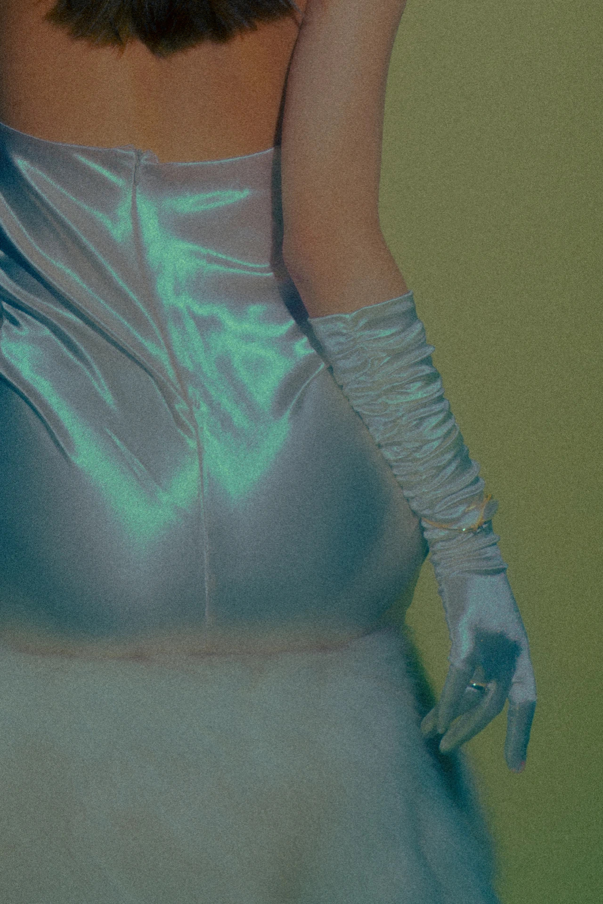

EVENTS
"Girls:2020"

Time Dec 1st 2020 to Jan 3rd 2021
Location Dirty House, 1st floor
Artists Xinxin Chang
XinXin is a photographer based in Changsha, China. "Girls 2020" is a photo collection of selected artworks
in
2020. Under her camer, girls are given their own emotion and power.